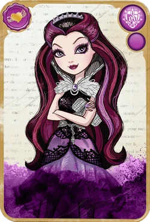
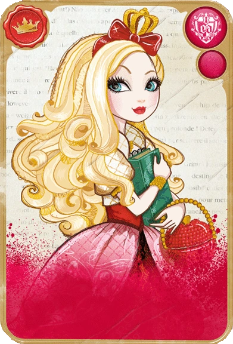
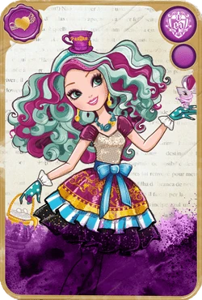
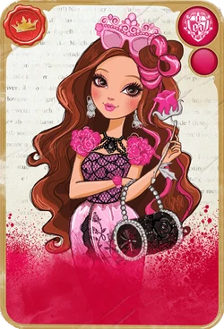
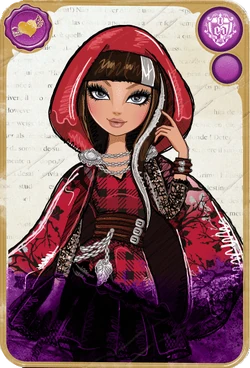

| Raven Queen |
Raven Queen, daughter of the Evil Queen, is a kind, sarcastic student on the Rebel side of Ever After High. Her destiny is to become the next Evil Queen. Due to her unwillingness to take on such a tragic destiny, she firmly believes that people should have the freedom create and decide on their own destinies. Info from Fandom. |
Raven technically has dark magic. She can telekinetically control or levitate anything, though her emotions may affect her ability to perform these powers. She can also summon creatures that are less favorable, unlike Apple, by demanding them. She eventually gains full evil powers in the series. Info from Fandom. |
| Apple White |
Apple White, daughter of Snow White, is a popular, cheerful student on the Royal side of Ever After High. Her destiny is to become the next Snow White. She believes that everyone should follow their destiny no matter what. Info from Fandom. |
Apple can hypnotize anyone using her looks to do a good deed. She can also summon any good magical creature or regular animal to aid her. Info from Fandom. |
| Maddy Hatter |
Madeline "Maddie" Hatter, daughter of the Mad Hatter, is a bright, energetic student on the Rebel side of Ever After High. Her destiny is to become the next Mad Hatter. She sides with Raven, thinking that people should be able to freely choose their destiny, though she wouldn't mind following her father's footsteps. Info from Fandom. |
Maddy has infinite space in her hat, allowing her to store endless amounts of things. She can also communicate with people in different dimensions. Info from Fandom. |
| Briar Beauty |
Briar Beauty, daughter of Sleeping Beauty, is a sassy, stylish student on the Royal side of Ever After High. Her destiny is to become the next Sleeping Beauty. She generally thinks that people should be following their destinies, though is scared for her own as she has to sleep for a century. Info from Fandom. |
Briar is able to hear anything around her while she's sleeping. Info from Fandom. |
| Briar Beauty |
Cerise Hood, daughter of Little Red Riding Hood and the Big Bad Wolf, is an athletic, reserved student on the Rebel side of Ever After High. Her destiny is to become the next Little Red Riding Hood. She thinks that people should follow their own destiny. Info from Fandom. |
Cerise has enhanced senses, speed, and strength. Her eyes also glow yellow when using her wolf powers. Info from Fandom. |